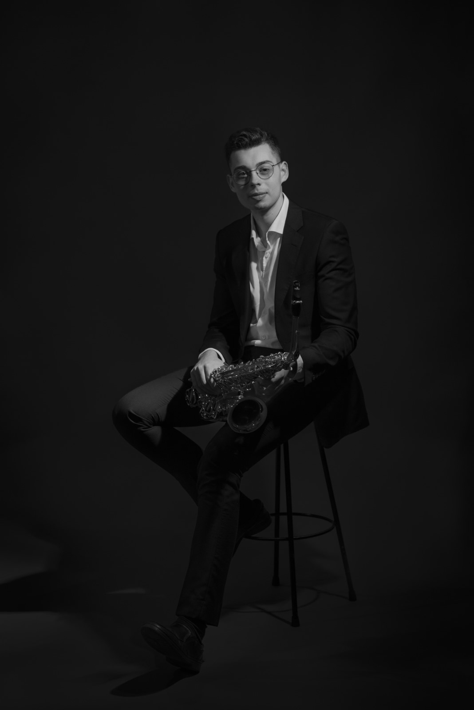
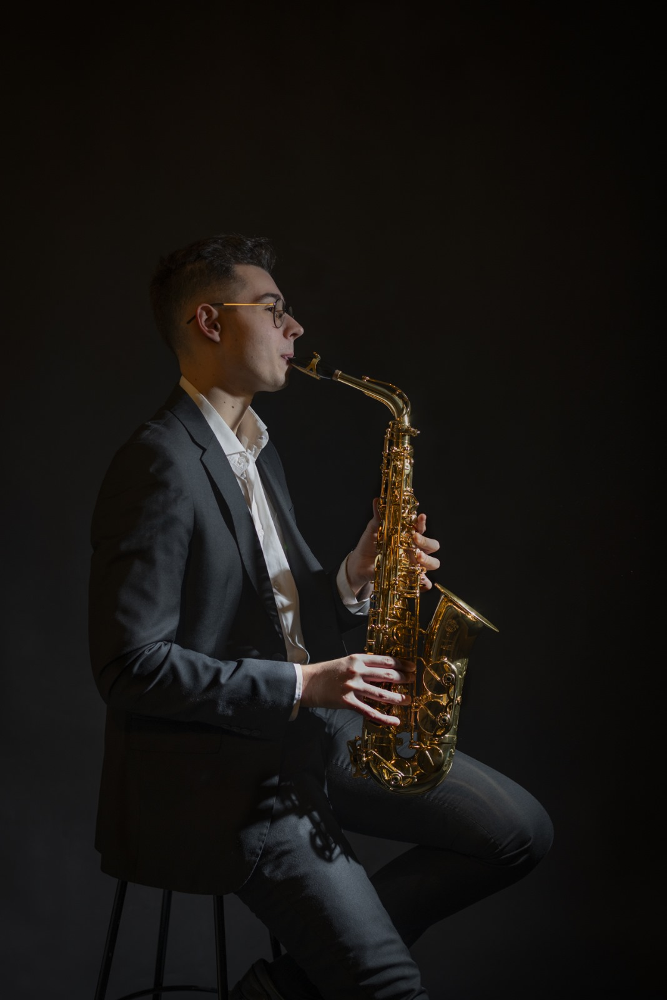

01 / PERFORMANCE
Solo
Practice
Classical and contemporary saxophone performance, bringing together established repertoire and new artistic ideas.
↗CLASSICAL · CONTEMPORARY · EXPLORATORY

For Miguel Bargiela Souto, the saxophone is a meeting point between tradition, experimentation and collaboration.
Born in 2002 in Salvaterra de Miño, Spain, Miguel approaches performance through both classical repertoire and the evolving sound world of contemporary music. His artistic interests extend beyond the concert stage, embracing new works, interdisciplinary projects and the creative exchange between performers and composers.
His musical path began at the Conservatorio Profesional de Música de Tui, where he received the Extraordinary Prize, and continued at the Conservatorio Superior de Música de Vigo under Rafael Yebra, graduating with the Extraordinary End-of-Degree Award. He was also awarded second prize at the “Antonio Granxa” competition.
Now based in Vienna, he is pursuing a Master’s in Neue Musik Ensemble at the University of Music and Performing Arts Vienna (mdw). His work in the city includes collaborations with Argo Kollektiv and Ensemble XXI, as well as performances at Wien Modern and SUENA Festival.
Alongside his contemporary projects, Miguel is principal alto saxophonist of Banda Filharmónica de Vigo and has collaborated with Banda Unió Musical de Llíria and Banda Municipal de Pontevedra. His musical development has also been enriched by masterclasses with Nicolas Arsenijevic, Kyle Horch, Ties Mellema, Raaf Hekkema, Lars Niederstraßer, Ángel Soria, David Brutti and Arno Bornkamp.
DISCOVER MY PROJECTS ↗Sound is just
the beginning.
From contemporary chamber music to expanded instrumental possibilities, my work is shaped by curiosity and collaboration.
Classical and contemporary saxophone performance, bringing together established repertoire and new artistic ideas.
↗An ongoing investigation into the Tubax in E♭, with a focus on fingerings, microtonality and extended playing techniques.
↗Discover the Vienna-based contemporary saxophone quartet, its projects and recordings.
↗Selected recordings from my performance practice. Video titles and classifications will be confirmed soon.
Provisional video selection: the first three links appear here until their titles and performers are confirmed. Quartet recordings will be curated separately.
Upcoming and past performances. New dates are added to the concert calendar as they are confirmed.
Private saxophone lessons in Vienna or online, tailored to your musical goals, experience and curiosity.
ENQUIRE ABOUT LESSONS ↗
Whether you're developing your foundations, refining your classical repertoire, or exploring contemporary playing techniques, lessons are tailored to you.
Choose between in-person lessons in Vienna and online lessons from wherever you are. For availability and rates, please get in touch by email.
For concert invitations, projects, collaborations and professional enquiries.
MIGUEL.BARGIELA.SOUTO@GMAIL.COM ↗
Follow the journey.